| 日付 | 2019年3月21日（木） |
|---|---|
| メンバー | 家族（妻、長女・8歳、長男・5歳） |
| アクセス | 電車 |
娘が水族館に行きたいと言うので周辺の水族館を探してみる。
これまで何度かしながわ水族館には行ったことがあるが、
その近くにアクアパーク品川という別の水族館もあるようだ。
2005年開館の比較的新しい水族館で、展示方法にも工夫がなされていて
楽しめそうなので、行ってみることにする。
本日は電車移動。繁華街に来るのは久々だ。
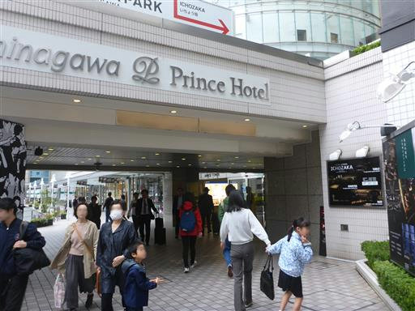
水族館に到着。思いの外長蛇の列ができている。
コンビニでチケットを買っておけばよかった。
自動券売機が多数あるので、待ち時間はそれほど長くない。
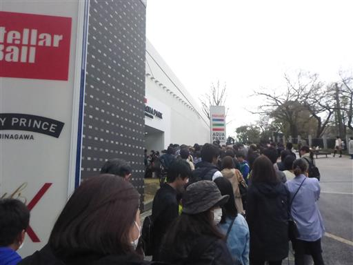
入ってすぐのところにバイキングのアトラクションが…
子供達は食いついて見ていたが、魚を見に来たためアトラクションはパス。
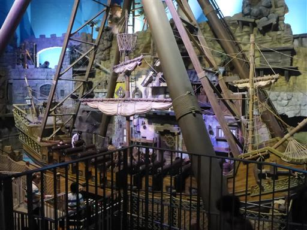
入口にある水槽。
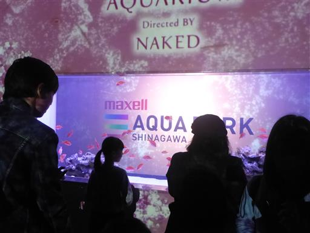
少し進むと今度はメリーゴーランド。
アトラクションは別料金なのでここもパス。
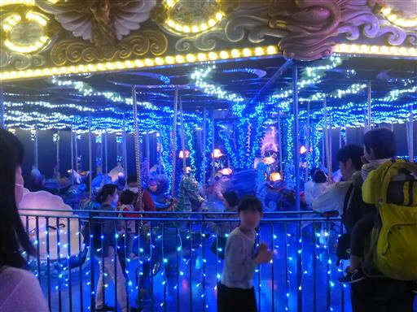
ようやく魚の観賞。ガラスに触れると、CGで描かれた魚や説明を見ることができる。
子供達は魚ではなくガラスに映った絵しか見ていない…
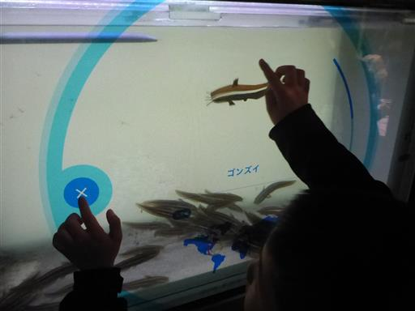
顎の下から長い2本の髭が伸びている。どう進化したらこのような形になるのだろう？
水槽の背面は鏡で見せ方が美しい。
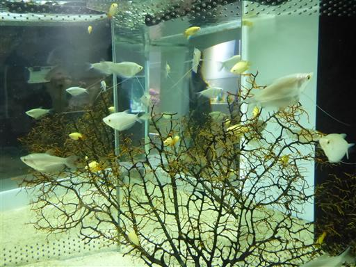
水槽以外に桜も飾られている。
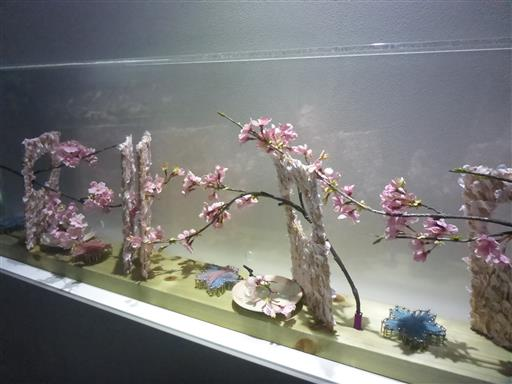
下は水槽、上は映像。テーマは桜だ。
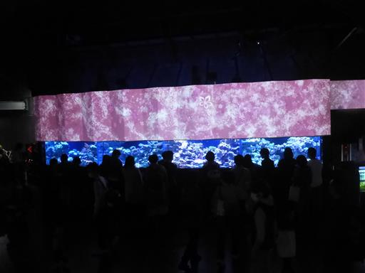
カサゴとオコゼ。岩に擬態している。
全部で5匹いるが、分かるだろうか？
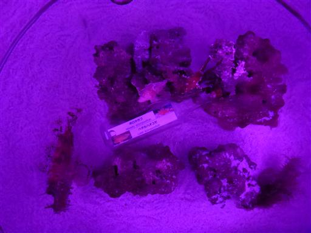
イベント「お花見ペンギン」。ショーというほど大層なものではないが、
ペンギンが坂を登ってくす玉を割る。
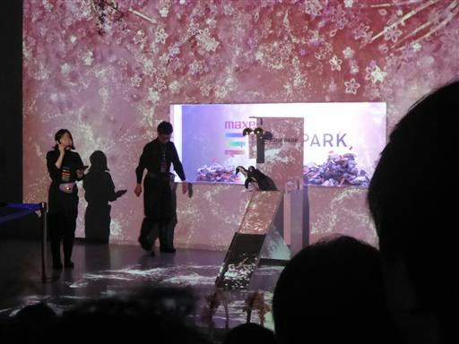
クラゲの展示ルーム。水槽や照明が独特で、壁は鏡になっている。
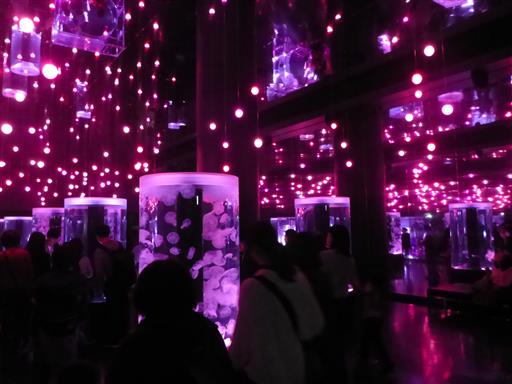
長い触手のクラゲが多い。
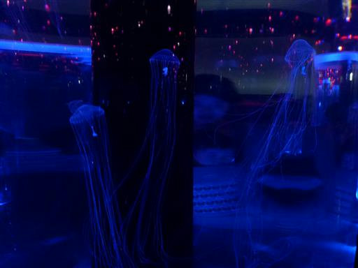
触手が絡まっているようだ。自然にほどけるのだろうか？
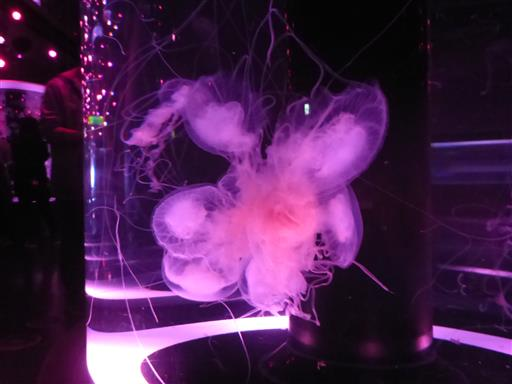
触手のないクラゲ。海で見たことがあるような気がする。
生物の名前や説明書きなどは無いため、詳細は不明。
この水族館は勉強する場ではなく、見て楽しむというコンセプトなのだろうか？
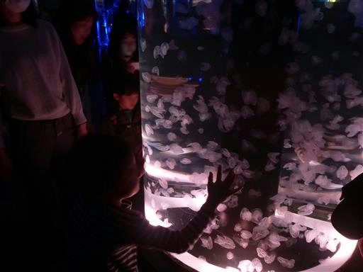
アシカショーを見に行く。かなり近くからショーを見ることができる。
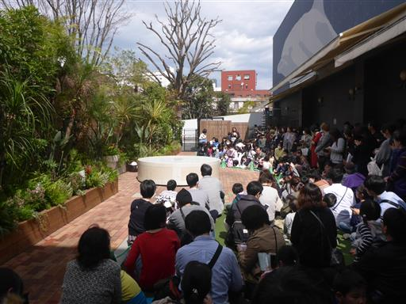
元々オットセイショーのはずだったが体調不良らしく、緊急登板となったアシカくん。
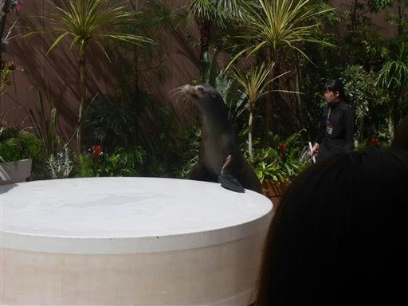
前ひれでの倒立。この辺りは楽勝。
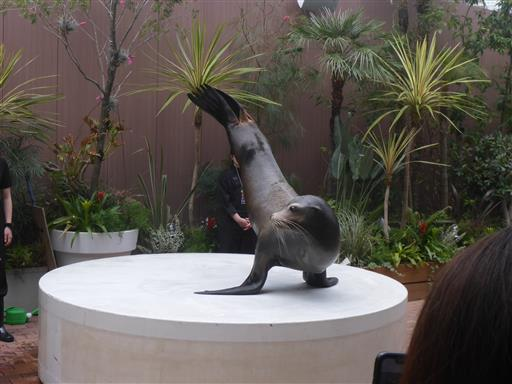
立ち上がる。思った以上に背が高い。
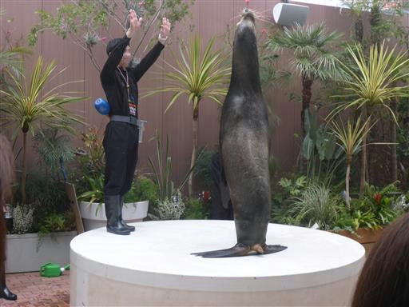
お次は鼻の上にボール、お盆、ペンギン人形。そして倒立。
見事なバランス感覚だ。
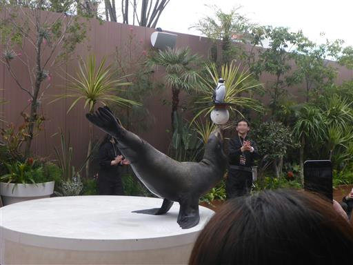
バイバイ。
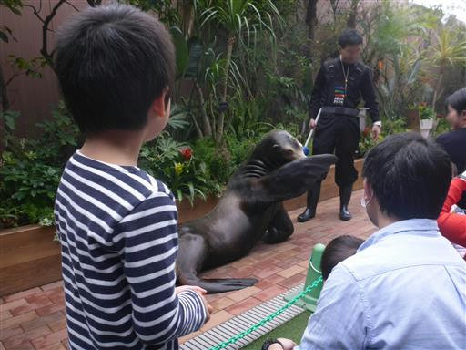
お次はイルカショー。前の方が空いていたため、最前列の席をゲット。
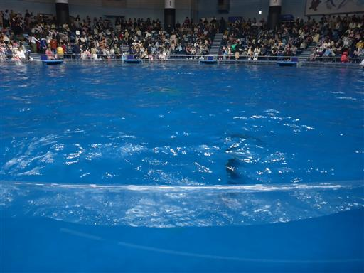
前の席は濡れると何度もアナウンスがあったため、緊急でポンチョを購入。
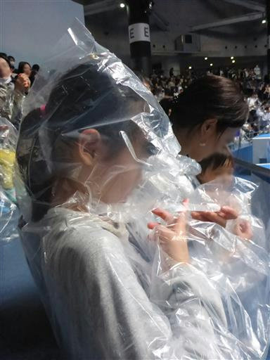
ショー開始。はじめはオーソドックスなイルカのショー。
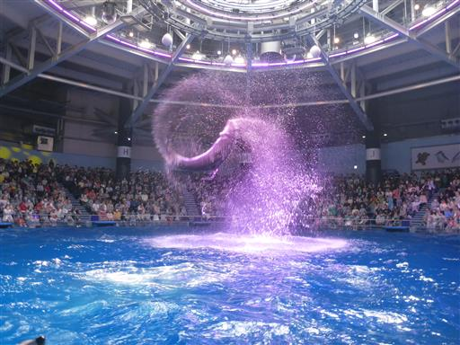
光を照らしたり、上から水が落ちてきたり、演出は工夫を凝らしている。

イルカが水槽の周りをまわって、尾びれで水をかけ始める。

こっちにも来たー！
イルカの水槽なので塩水なんである。しょっぱい。
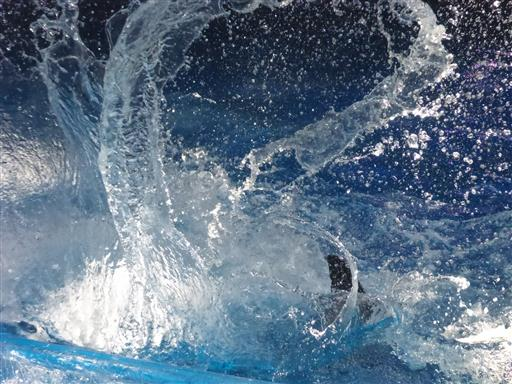
イルカが大ジャンプして水バッシャーン。いや、さすがにこれはヤバい。
でも会場は大盛り上がり。幸いこっちに大イルカは来なかった。
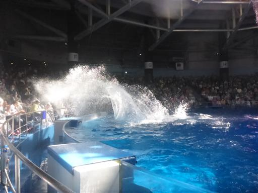
イルカショーを見たら昼食をとりに一旦外に出る。
品川駅前のつばめグリルを利用。
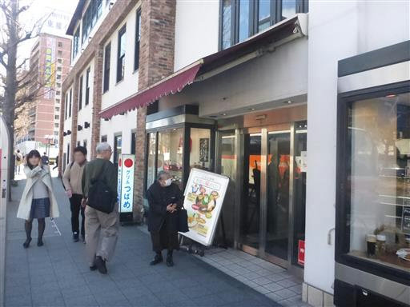
高山稲荷神社に寄り道する。都会の片隅にもこのような神社が残っている。
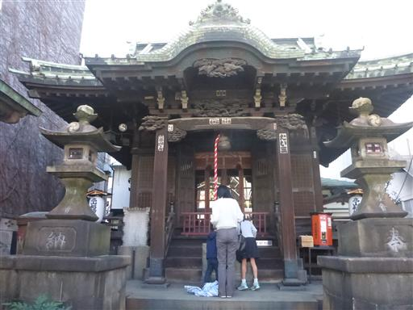
手水舎。上にセンサーがついていて人が近づくと水が出る。
こういう合理的なところは都会の神社っぽい。
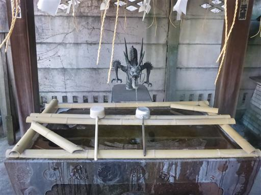
水族館に戻ってくる。
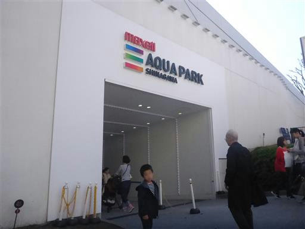
昼を過ぎて中は大混雑。
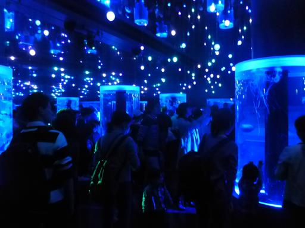
海中トンネル。
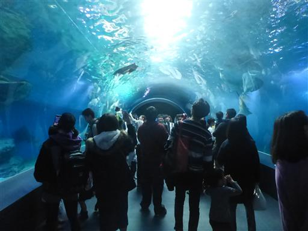
ノコギリエイ。何とも不思議な形の生物だ。
あのノコギリで魚を叩いたり押さえつけたりするらしい。
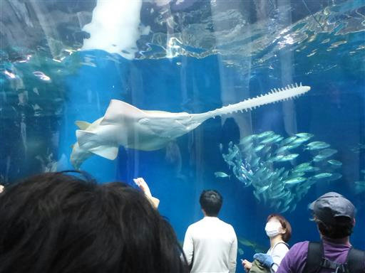
岩を枕に居眠り。
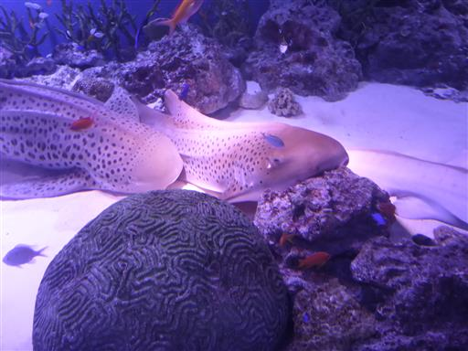
小魚。自然に似せた風景を見ていたら、久々に海に行きたくなって来た。
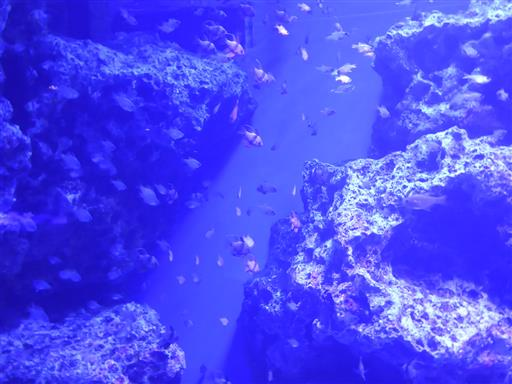
ペンギンプール。水族館の定番。
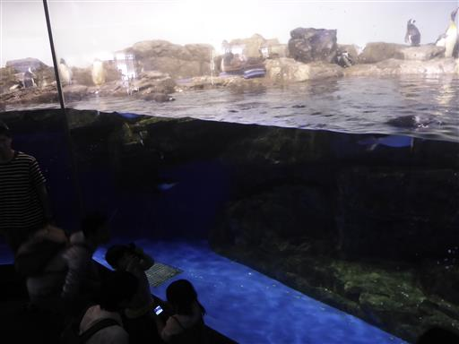
カワウソ。かわいい。
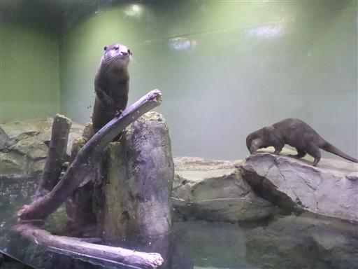
今年1月に産まれたばかりのペンギン。これもかわいい。
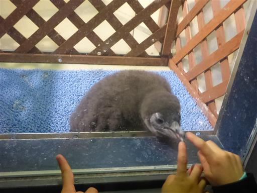
ピラニア。ほとんど動かない。
餌を入れたら急に動き出すのだろうか？
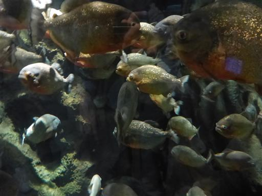
最後にもう一度、（今度は遠くから）イルカのショーを見てから帰る。
比較的小さい水族館ながら、いろいろな展示ルームがあり、
また何といっても圧巻のイルカショーが楽しい水族館だった。
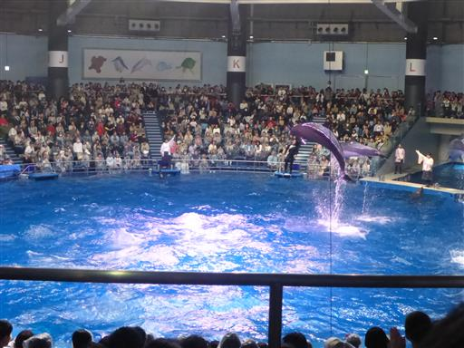